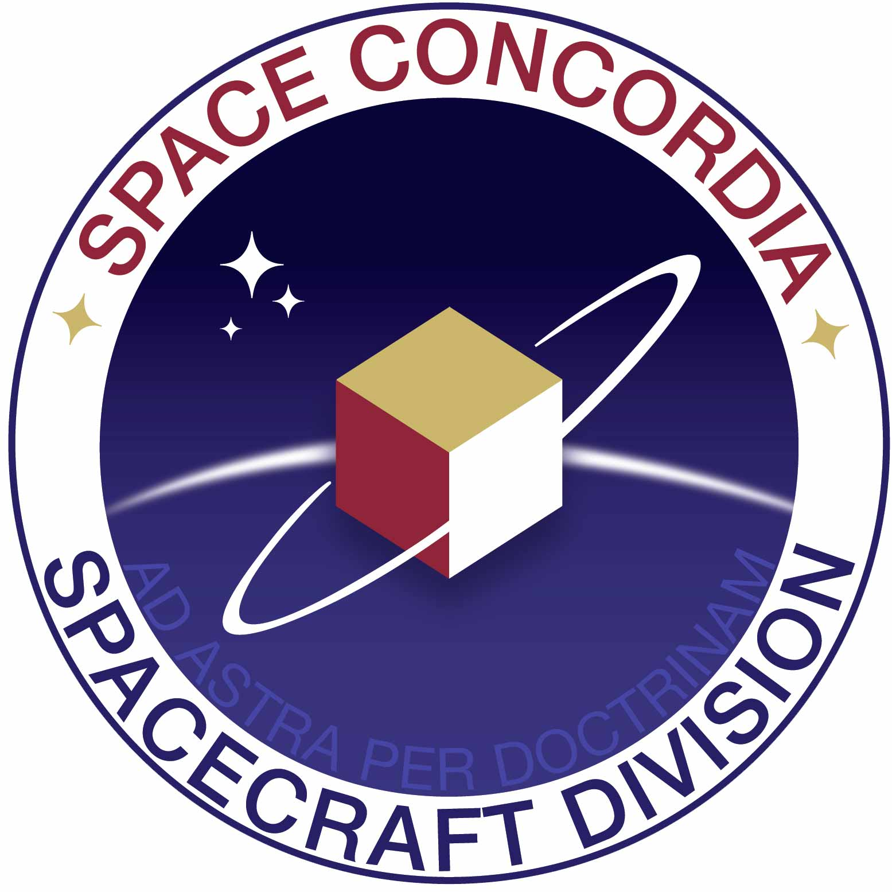
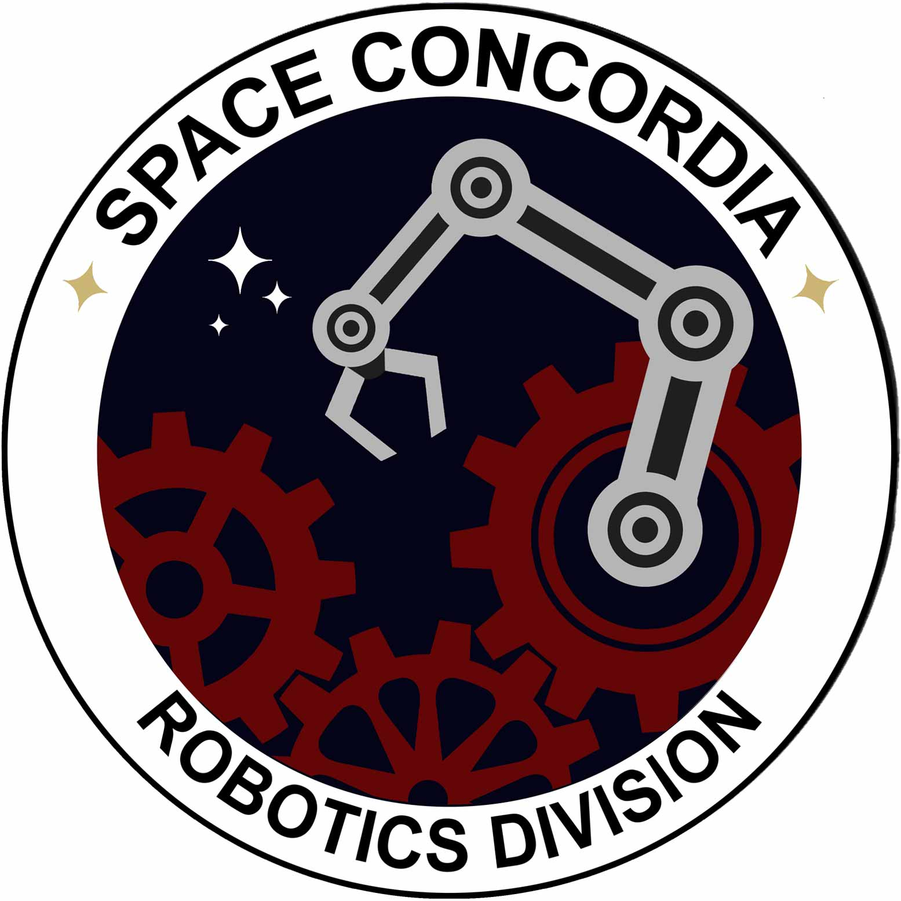

I graduated from Concordia University in Computer Engineering.
Currently, I am a Software designer in the control plane team at Kaloom, where we aim to solve various virtual network function (VNF) challenges. In my free time I like to write tech posts, summarize research papers, and take random notes of what I read on the internet.
Email / Linkedin / Github / Twitter / Blog
My current interests are in networking, back-end development and distributed systems in general.
I previously explored the space of embedded systems and low-level development in the context of aerospace and space related projects.
Professional Experiences
- Software Developer, Networking & Systems
Kaloom (Aug. 2017 - Present)
- Software Developer, Emerging Technologies R&D
JDA (Mar. 2017 - Aug. 2017)
- Software Developer, Corporate & Investment Banking
Société Générale (Nov. 2016 - Mar. 2017)
- Consultant, Infrastrucutre Engineering
Morgan Stanley (Jul. 2015 - Nov. 2016)
- IT Consultant, Infrastrucutre Improvment
Hermes Medical Solutions (May 2012 - June 2015)
Competitions During Undergrad
- 
Canadian Satellite Design Challenge (CSDC), 2010-2013 – 1st Place
- Multidisciplary project involving mechanical, electrical and software systems.
- Reverse engineered UART protocol for transceiver configuration.
- Designed communication protocol to provide reliable wireless communication over AX.25 link.
- Coded userspace drivers for embedded Linux platform.
- 
University Rover Challenge, 2013-2014
- Project to design, build and test a proto-Mars rover prototype.
- Designed and implemented the rover’s communication subsystem.
- Created benchmarking tool to profile communication subsystem performance.
- Developed the PID motor controller and the video streaming component.